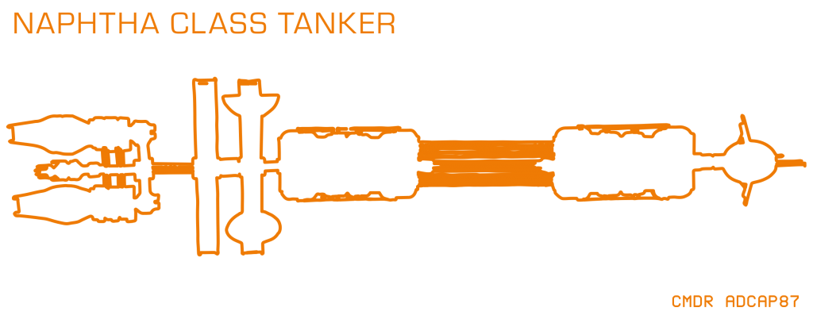

The Naphtha-class is a class of Tanker.
The class consists of a long central superstructure fronted by a command module, then with six trusses of three rows of tanks each mounted around the superstructure down the length of the ship, with a gap in the tanks in the middle; at the rear of the ship are two rotating habitat rings, the first is a single ring with three agricultural domes mounted on the inside, while the second is a dual-ring habitat.
The rear of the ship has two single-engine drive modules with one Automated Defence Turrett each, and a sensor pod. A conn tower is mounted at the rear of the ship in front of both engine drive modules.
The Ship Log Uplink is generally mounted on the conn tower. The single Cargo Bay is found below.
Its default Cargo of around 15 tons is Chemicals and Medicines.
A Naphtha-class Tanker with call-sign CHA-857 can be found for reference at the following waypoints: Chacobog, HIP 112970, 11 Cephei, 31 Cephei, 11 Cephei, Khun.
- Number of Turrets: 2
- Cargo Bays: 1
- Total Cargo: 15t
- Default Cargo: Chemicals (Hydrogen Peroxide, Liquid Oxygen, Water), Medicines (Advanced Medicines, Basic Medicines, Performance Enhancers).
- Rare Commodity Sub-Types: Food

(Revision CMDR goemon, 21st of May 2022)
Known examples of this class are:
 Naphtha Class Tanker FKS-981 - The Naphtha Class Tanker designation FKS-981 is expected to be in the following system, based on the last reported flight operations plan: A number of Engineer Materials are scattered nearby, and a number of ships are in the area. A Ship Log Uplink point can be located on the hull. Deploy your ship’s hardpoints and...
Naphtha Class Tanker FKS-981 - The Naphtha Class Tanker designation FKS-981 is expected to be in the following system, based on the last reported flight operations plan: A number of Engineer Materials are scattered nearby, and a number of ships are in the area. A Ship Log Uplink point can be located on the hull. Deploy your ship’s hardpoints and... Naphtha Class Tanker IPD-038 - A Naphtha Class Tanker IPD-038 can be found around Pleiades Sector IR-W d1-55 2 b. It shows signs of having being attacked by Thargoids. There are materials / cargo / escape pods in the area, and there will usually be either as medical rescue fleet or a Thargoid in the area. There is a Ship...
Naphtha Class Tanker IPD-038 - A Naphtha Class Tanker IPD-038 can be found around Pleiades Sector IR-W d1-55 2 b. It shows signs of having being attacked by Thargoids. There are materials / cargo / escape pods in the area, and there will usually be either as medical rescue fleet or a Thargoid in the area. There is a Ship...